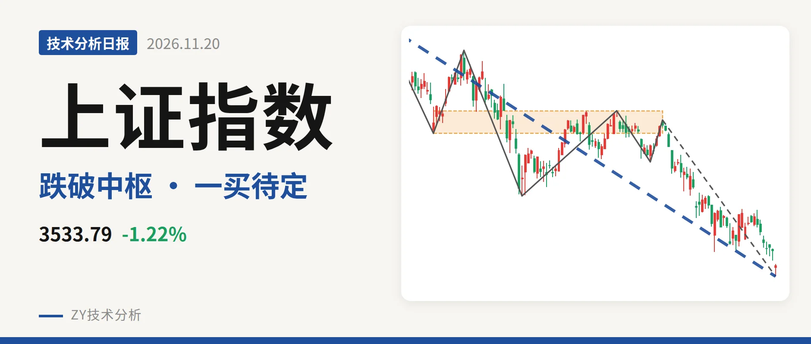
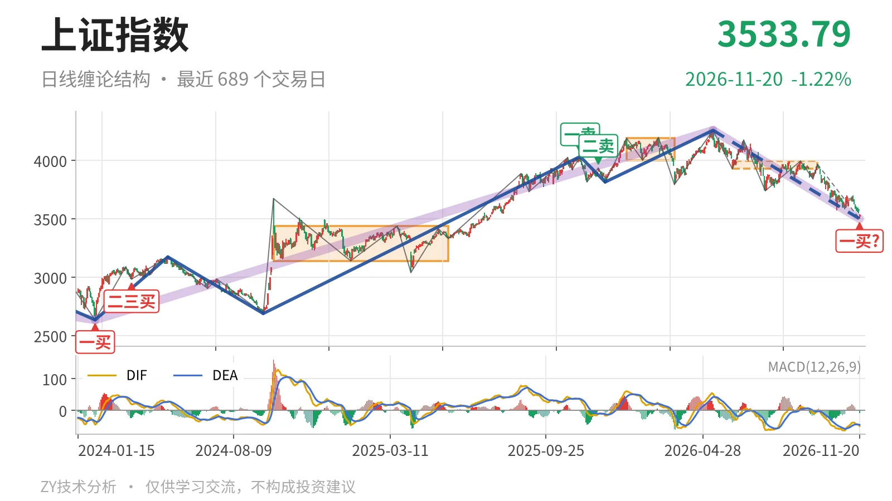
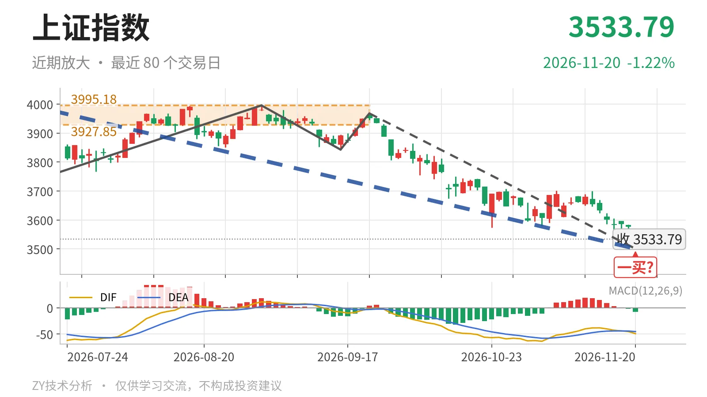

上证指数｜跌破日线中枢，暂定的一买3501点

最近日线中枢 3927.85—3995.18点，收盘位于中枢之下
一句话：日线下跌未结束，收盘3533.79点位于最近中枢下方，暂定一买待定
🧭 走势结构：日线下跌段没有结束，更大级别上涨未坏
5月14日从4258.86点至3500.83点的日线下跌线段跌17.8%，当前没有结束，内含7笔。更早一段2025年12月16日至2026年5月14日从3815.84点到4258.86点的上涨段已经结束，且当前低点已跌破3815.84点，上涨段被基本回吐。更大级别看，2024年2月5日至2026年5月14日从2635.09点到4258.86点、涨约61.6%的上涨段未被破坏，所以当下的日线下跌段是这轮上涨后的回落。走势性质是日线下跌段延续，不是中枢震荡。

📍 中枢与位置：跌破最近日线笔中枢，中枢下移
最近日线笔中枢由6月8日至9月22日形成，区间3927.85—3995.18点。最新收盘3533.79点位于该中枢下方，低于下沿约10.0%。前一个日线笔中枢1月14日至3月23日区间4002.78—4190.87点，中枢位置由高到低，属于中枢下移。9月22日从3967.68点开始的下跌笔已经离开该中枢，收盘没有回到中枢内，离开幅度不小。
🎯 买卖点：11月20日一买暂定，旧卖点降级
2025年11月14日一卖4034.08点、2025年12月8日二卖3936.31点，在2026年5月14日创下4258.86点新高后，只对应更小级别。11月20日的3500.83点是一买，但其所在9月22日以来的日线下跌笔仍在延续，因此这是暂定的一买，价格会随着这一笔低点下移而改写。此前2024年2月5日一买2635.09点与2024年3月28日二三买2984.12点是历史结构，不参与当前笔判断。

⚡ 背驰：日线笔间没有底背驰
最可比的一组同向日线下跌笔是6月23日至7月20日和9月22日至今。前一段从4175.35点跌至3741.11点，绿柱面积289，DIF低点-61.8；后一段从3967.68点已跌至3500.83点，绿柱面积454，DIF低点-64.0。价格创了新低，DIF低点同步下移，绿柱面积也放大，不构成“新低不新弱”。当前下跌笔还在延续，后续面积与DIF低点仍会变化，但就当下比较，没有日线笔间底背驰。
🧱 关键位置观察：反抽不回3928点，三卖结构仍在
上方关键位看最近日线笔中枢下沿3927.85点，反抽若回不到3928点附近上方，结构上构成日线三卖，下跌段还有延续条件。重新站上3928点上方，则更可能是中枢扩展，走势转为震荡整理。下方3500.83点是暂定的一买位置，但目前只是当前笔低点，继续下破后该点会下移。前低3741.11点被跌破后转为反抽压力。更下方的线段中枢2021年7月28日至2023年5月9日区间3312.72—3418.95点，当前收盘仍在其上方；若继续跌破3418.95点，则下跌结构扩大。结构弱在跌破中枢下沿、绿柱面积未收缩，综合看结构偏弱。
⚠️ 本文为基于公开行情数据的缠论技术结构记录，由程序自动计算并生成，仅供学习交流，不构成任何投资建议。市场有风险，投资需谨慎。